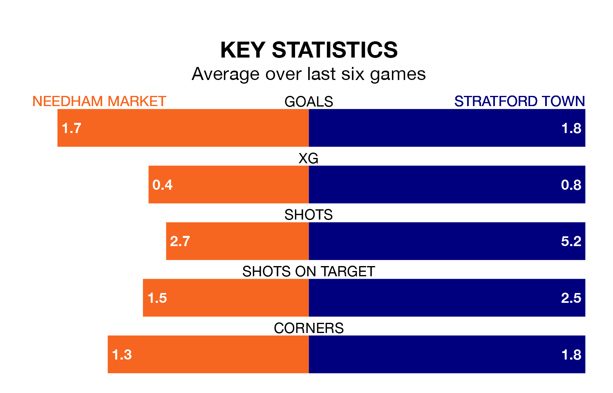

Two of Southern League Premier Central's top sides face each other at Bloomfields in Saturday's kick-off, when table-topping Needham Market host fourth-placed Stratford Town.
Needham Market have picked up 15 wins and five draws from 23 games so far this season, and sit four points above the visitors going into the 3pm match.
Town, meanwhile, have won 14 and drawn four of 26, picking up 46 points.
With 44 goals in 23 games so far this season, Needham Market are scoring more than average in the league with 1.9 goals per game. And they are conceding fewer than average, letting in 16 goals at a rate of 0.7 per game.
Stratford are also above average scorers, with 1.8 goals per game, compared to a league average of 1.5. They have conceded 1.5 goals per game.
In the last 10 years, Needham Market and Stratford have played each other on 10 occasions. They won five each.
On average, Needham Market scored 1.9 goals and Town 2.2 in those matches.
Their last meeting was on August 5, when Stratford won 6-1 at home.
The home side are in good form in Southern League Premier Central, with four wins and a draw from their last six games.
With three wins and two draws over that period, Town's form is slightly worse – they have taken 11 points from 18, compared to Needham Market's 13.
Needham Market's last match was on January 13, a 1-0 win against Halesowen Town.
Stratford beat Barwell 4-3 last time out, also on January 13.
Updated: 06:13 (UTC), 18/01/24